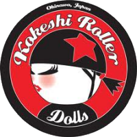
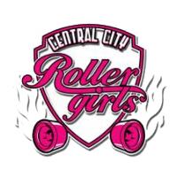
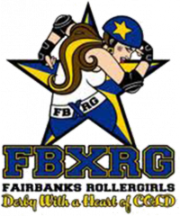
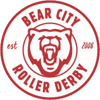

Rule 56 now coming Online on Monday 6th.
You might remember that last year, we brought you news of the Derby Stance Coaching Summit - the UK's first Coaching-focussed conference designed to bring together coaches across the UK to share their experiences in workshops lead by some of the greatest coaches in Roller Derby - including Texas Rollergirls' Smarty Pants (Nadia Kean), who we interviewed. Derby Stance was a huge success - we've not met any of the 80 attendees who had a bad thing to say, and many who talked about the connections, lessons and ideas that they'd collected over the experience.
Derby Stance was organised by Rule 56, the coaching enterprise founded by Rainy City Roller Derby's Hydra (Maha El Nasser) and Leeds Roller Derby's Ecky Thump (Ruth Saxton). Now, working again with Smarty Pants, they're back with another development for the UK Coaching community, and beyond - e-learning and conferencing in a series of targeted webinars.
The idea, as Ecky Thump explained, is to provide a much more accessible set of coaching resources. “In between skating, coaching, training, watching and doing admin, skaters have very little time for extra derby learning. Add travel and cost into that and conferences are a bit of a luxury. We hope that these webinars will give more coaches, not just those who live near to Yorkshire or whose leagues are willing to subsidise, the opportunity to engage with some of the talented coaches we have lined up.”
The targeted scope of each webinar is also designed to assist with this, as the focus means that they can fit into an evening's session.
The pilot webinar - entitled "Coaching 101", and based on the introductory coaching talk which Smarty Pants delivers with her own coaching company Get Smarty Coaching - is available for sign-up now.
The session will begin at 19:00 (GMT) on Monday March 6th, and will last for approximately 1 hour. Event details at: https://www.facebook.com/events/1451911724851183/permalink/1463473710361651/ where a registration link will become available "before the end of the week".
For the time in your timezone, click here: https://www.timeanddate.com/worldclock/fixedtime.html?msg=Coaching+101%3A+Rule+56+and+Smarty+Pants&iso=20170306T19&p1=136&ah=1
The Tomodachi Cup: Kokeshi Roller Dolls
As the second ever international tournament in Okinawa, Japan grows ever closer, we're bringing you another interview with a team attending the Tomodachi Derby Tournament, March 24th to 26th.
The last of our interviewees in the WFTDA Sanctioned tier of the tournament, Kokeshi Roller Dolls are one of the two "local" leagues, based in Okinawa itself. KRD can contest with Tokyo Roller Girls for the title of "oldest league in Japan", both being founded around the same date.
In the Japan Open, Kokeshi were the only Japanese team to defeat the might Juneau Roller Derby. Previously to that, the team has also played international roller derby away, at The Big O in 2014. KRD skaters also contributed to the teams competing at the first ever public roller derby bout in China!

KRD were happy to answer some questions for us.
As the host league, and member of the organising Japan Derby Tournament Committee, what are you most proud of about the Tomodachi Tournament?
KRD: We’re technically not the host league; we’ll be hosting a revamped tournament next year called the Far East Face Off, but this year our role on the JDTC was solely to cover the marketing aspect of tournament preparation. One of our league members is a graphic designer, and was able to design the logo, banners, tees, and tournament program, which was a massive bonus for the JDTC. We're impressed that the committee, which first formed in September, was able to overcome a language barrier and pull off the planning of a tournament in under six months. Many of us worked overwhelmingly hard to make that happen.
In the last tournament, Kokeshi played the three visiting A teams from outside Japan, pulling off a win against Juneau in their last bout of the tournament. What lessons are you taking into the Tomodachi, when facing Fairbanks and Pacific in particular?
KRD: We’ve been practicing specific defensive strategies and better communication, and even increasing our endurance and strength training off skates. I think last year, our energy was focused on running the tournament, rather than practicing effective strategies. This year, our athletic staff isn’t involved in the tournament operations, and can focus on leading the team. Additionally, we were caught off guard by the slippery floor surface; the arena floors had recently been resealed and polished, and many of us did not have grippy wheels that first day. Lesson learned! We’ll be prepared for any surface this year.
You've played both Tokyo and D4 [Devil Dog Derby Dames] fairly regularly, of course (and D4 are particularly close by…). How are you feeling about your rematches against them this year?
KRD: We didn’t bout either of these leagues last season, and with the high turnover rate due to military relocation, many of our skaters have never played against these leagues. We have had opportunities within the past season to play fun informal mixed scrimmages with members of TRG and D4, so keeping a competitive mental focus might be challenging since we’re used to having fun on the track. Both leagues have some very skilled skaters that we’re excited to go up against. Our goal is to practice effective communication and teamwork now that our skaters have had a whole season to train together.
Outside of your division, what teams and bouts are you most looking forward to at the Tomodachi?
KRD: We're interested to see the Pan-Asian Spring Rollers play together. KRD was given the opportunity to skate with many of them in Beijing last summer at the HeForShe roller derby expo, which was a phenomenal experience. It sounds challenging to have a team comprised of women from different leagues all skating together for the first time, and we’re excited to see how they adapt to working together on the track.
What's next for Kokeshi, after the Tomodachi?
KRD: KRD is undergoing an exciting rebranding campaign! We are renaming the league “Okinawa Roller Derby” to better represent our location when we venture off island to play in tournaments. We are heading to Kaiserslautern, Germany for a tournament this June. We want to expand our horizons, challenge ourselves, and see what we can accomplish as a travel team. Then we’ll take the summer off to refocus on recruitment and, of course, put in some hours at the beach!
EuroClash Interviews: Central City Rollergirls
In this week's EuroClash interview, covering the attendees at Newcastle Roller Girls' first international Tournament, this March 25th to 26th, we're back in the UK with one of the first teams in the UK... Birmingham's Central City Rollergirls.
In common with many of the attendees at EuroClash, CCR A attended the Beach Brawl in Florida in 2016, winning two out of three bouts with impressive margins. They also managed to compete against two other EuroClash attendees towards the end of the year - holding Dublin to a near draw, and also playing Paris.
Next year, as well as EuroClash, Central City are once again joining forces with Dublin to play San Fernando Valley Roller Derby, of California.

CCR's Co-Captains, Bunny Massacre and Woo Ha!, answered a few questions for us about the team.
In common with quite a few EuroClash attendees, CCR had their first trip to the USA last year, at Beach Brawl. As with most first-time USA trips for European teams, you got a good 40+ place rankings boost from this… but how was the experience for you generally, and did you find it different to what you expected?
Bunny: We had a fantastic time. This was something that we had wanted to do for such a long time and making it a reality was incredible. The whole trip increased our bond as a team; everyone worked so hard on and off track. I had tried to curb my expectations about our tournament experience. We had taken part in European tournaments in the past which had given us a great basis to work with and unsurprisingly a lot of the set up was similar! We had anticipated challenging and tough games, and weren’t disappointed! Overall it was a wonderful experience.
Woo: It was an incredible experience - right through from the team decision to take part to the fundraising and combined league efforts and on to the actual tournament. The team was in great shape when we arrived and ready to face the somewhat unknown. We had limited intel on the teams we were facing so we approached each game with a view to playing OUR game and nailing our strategy objectives. We learned a lot (the logistics of a USA trip alone comes with its challenges) but we loved the challenge of games outside of the norm for us and the experience of tournament play was invaluable. It was a 100% positive experience! You're also one of the few teams to beat London's B team, Brawl Saints, in 2016. Even London B used to be considered untouchable by other UK teams - how was it to play them (and do you think it's a sign that the rest of UK derby is really catching up to London)?
Woo: What a great game it was too! We're huge fans of the LRG Brawl Saints girls! The competitive Derby landscape is an exciting place to be; teams are getting tighter, strategy is getting slicker and the UK coaching standard is at an all time high. There's so much more we've got access to now for learning from vs 2 years ago... so yes, the playing field is definitely shifting.
Bunny: We had been working really hard to the build up to this game, as we knew it would be stiff competition. It was also our first home game in 18 months, so there was a real mixture of excitement and nerves! There was an overwhelming sense of pride and of course happiness when the final whistle blew. They were a great team to play. As Woo says there’s so much more knowledge, strategy and coaching available to us now and in such a diverse variety of ways. This is all having a significant impact on the standard of UK game play and definite sense that a real attempt is being made to catch up.
You'll be playing hosts Newcastle, and Tiger Bay Brawlers at EuroClash. When you played them last, both in 2015, TBB had a strong win, and Newcastle a close defeat… but in the last two years, both teams have changed things up quite a bit. How are you feeling about the two games?
Bunny: We have a long history with both these teams, there’s real excitement to play them again. We are well aware that both teams are going bring their A game and be incredibly challenging to play. What’s great is that they are fantastic teams to compete against, we always really enjoy facing these ladies on track and no matter how fierce the game, it will also be great fun!
Woo: There's huge excitement here at CCR for these match ups. We're really chuffed to be part of the action. Both opposition teams represent a massive opportunity for us to bring our best game to track against a bunch of classy, hardworking women. It's going to be tough, we're under no illusion, but having played both teams previously as well as going through some changes ourselves, we're really excited to see how it plays out on track.
And, in the time between your two fixtures, which teams are you most looking forward to watching?
Woo: So many awesome match ups! It's always great to watch Paris in action - we love those girls. We're excited to see the international game at the end of the tournament, too.
Bunny: Playing at tournaments for me always brings along the added bonus that we get to watch incredible derby too! All of the fixtures look particularly exciting, but I’m looking forward to seeing Bear City play as I haven’t had an opportunity to watch them live in a while. And, of course, watching Team Ireland, where we may get the chance to support a couple of CCR team mates.
Tickets to EuroClash are available at: https://www.euro-clash.com/tickets and are £25 in advance. More information is available at the event page, linked at the top of this article.
Non-US/Canadian Derby - 4th/5th March edition
As is traditional, we're bringing you another roundup of the upcoming Roller Derby this weekend from across the world. As always, we're using Flat Track Stats for much of this information - for regions with less good coverage, we also do a bit of intensive searching.
Predictions of bouts are from FTS, if possible, and from our own SRD Rank where FTS cannot make predictions (for example: Latin America, or non-MRDA men's bouts).
If we've missed you from our roundup, please let us know!
Scotland
As far as we know, there's no fixtures in Scotland this weekend.UK
As will be the case for the next few months, most of the bouts in the UK are part of British Champs, which we will start with:- the Tier 1 Men's continues with Tyne and Fear Roller Derby hosting New Wheeled Order for a single bout [FTS Tournament][EVENT] (FTS can't predict this, but SRDRank gives the hosts a slight advantage.) This event is topped by an open-subscription rookies/"fresh meat" bout for female skaters, for which signup is still open.
- the Tier 2 South's next fixture is hosted by Kent Roller Girls, who play South West Angels of Terror, while Royal Windsor play Big Bucks [FTS Tournament][EVENT] (FTS expects Royal Windsor to win, and the hosts game to be hard to call.)
- and on Sunday, the Tier 4 North continues with Grimsby's Grim Reavers hosting Durham Roller Derby, and also seeing Mansfield play Durham's other league, Rolling Angels [FTS Tournament][EVENT] (FTS expects the hosts' game to be close, but Mansfield to win in the other.)
- Brighton Rockers are hosting a double header with Vienna Roller Derby, with Brighton B against Vienna B [FTS], and A v A [FTS] [EVENT]. (FTS gives the advantage to the visitors)
- Oxford Roller Derby are hosting a closed event against Rebellion, with the B teams [FTS] and A teams [FTS] both competing against each other. (No event page as closed)
Europe
In Europe, there's the usual mix of national championships and individual fixtures:- The French Nationale Division 1 rumbles on as Strasbourg's Hell's Ass Derby Girls host Marseilles, Grenoble's Cannibal Marmots, Lyon, Metz and Paris B for a weekend of bouts[FTS Tournament][EVENT]
- also in France, Lille's Switchblade Roller Grrrls are hosting a triple header against Namur's leagues, with Men's teams Glorious Basterds against Barbiers de Sevices [FTS], Switchblade A v Namur A [FTS] and Namur B v Baronnes Von Schlass[FTS][EVENT] (These are all close games - the B game is a perfect 50:50 - by FTS)
- and in Paris, on Sunday, Panam Squad host a triple header, with Boucherie de Paris playing Reims' Beastie Derby Girls [FTS], Paris Rollergirls C against Lille B [FTS] and Panam B themselves against the Zombeers of Calais [FTS][EVENT] (Lille and Reims have the advantage by FTS. We can't call the Men's game.)
- and in Nîmes, the Bone Breakers are hosting Lausanne's Rolling Furies [FTS][EVENT] (FTS gives advantage to the hosts)
- Outside France, on Saturday, Scandinavia is having a lot of derby, starting with Gothenburg Roller Derby hosting a triple header (all play all) with Brussels Derby Pixies and Turku's Dirty River Roller Derby [FTS 1, 2, 3][EVENT] (FTS gives the hosts the advantage)
- and Malmö's Crime City Rollers are hosting their own triple header, as Crime City A play Stockholm A [FTS], Crime City B take on Dock City A, [FTS] and C take on Dock City B[FTS] [EVENT] (the hosts have the advantage in all 3 bouts, by FTS)
- on Sunday, Copenhagen, CRD host a closed bout against Dock City [FTS] (no event because closed)
- and in Norrköping, NRD B are playing Växjö [FTS][EVENT] (FTS considers the hosts very likely winners)
- In Portugal, Lisboa Roller Derby are hosting Nice's Baywitch Project [FTS][EVENT] (FTS considers this close, but slightly to Lisbon)
- and finally, in Prague, Prague City Roller Derby are hosting Brest [FTS] [EVENT] (FTS considers this a perfect 50:50 call between the two)
- Royal Swedish Army who have a triple-header which wasn't on FTS when we checked this weekend. Royal Swedish A will be facing Stockholm B [FTS], Royal Sweden B taking on Jackdaw City of Uppsala [FTS], and the event will be capped by a home teams bout.[EVENT]
Pacific
As far as we know, the Pacific Region is still in the recruitment and training phase of its current season. However...- Adelaides' Junior team, Lil' Adelaide, is across in the USA to play in the Oy Oy Oy Tournament Series, against a host of US Junior teams. This weekend's edition is hosted by Tampa Jr. [FTS Tournament][EVENT]
Latin America
Latin America's derby season is in full swing, by contrast.- In Colombia, The second event in Bogotá's 4th "district tournament" sees Legion Roller Quads host a triple header, with Combativas against Bogota Bone Breakers, and Fugitivas against Rock n Roller Queens in the women's division, and Rock n Roller Kings against Maquina del Mal in the men's [FTS Tournament][EVENT] (SRDRank gives the advantage to Combativas and Rock n Roller Queens - neither we nor FTS can rate the other bout)
- and on Sunday, in Argentina, Buenos Aires' 2x4 Roller Derby's Cowgirls from Hell are hosting B.A.R.D.s Mambas Negras [FTS] as part of an event to welcome Dublin Roller Derby's Chancleta and Mambas Negras Roller Derby's Manija to the country.[EVENT]
Other Events
Our semi-regular "other events" section highlights things further in the future you might want to keep an eye on.Rainy City's own Missy Rascal is also holding an Artistic Skating session on
Slightly further in the future, Camp Nidaros is an exciting Co-ed Bootcamp and Officials Bootcamp hosted in Norway, and with an impressive set of coaches, V-Diva, Sexy Slaydie, Brazilian Nut, Varla Vendetta and, for the officials, Reverend Riot! And closer to the present day, Rule56 and Smarty Pants of Texas Rollergirls are collaborating on bringing derby coaching experiences into the 21st century, with their Coaching 101 Digital Pilot on MondayBritish Champs North Update 23 Feb
As we've previously mentioned, we're planning on tracking events in the Northern divisions of the British Championships this year (that is: the Tier 1, Tier 2 North, Tier 3 North, Tier 4 North, as well as the Men's Tier 3 North), partly via particular teams in each one (Leeds Roller Derby, Newcastle's Whippin Hinnies, Auld Reekie's Reserves and Granite City Roller Derby, York Minxters, and Bairn City's Skelpies and Glasgow Men's Roller Derby respectively).
As part of this, this is one of our regular updates, after some of the teams have played, and as others prepare to.

The Whippin' Hinnies are the first team we're tracking to have played, last weekend facing Cambridge Rollerbillies in Tier 2 (we talked to them about the challenge beforehand). Whilst not managing to defeat their opponents in Manchester, the Hinnies did improve on their expected performance. Statswise, full statistics are not available yet for the bout, but Co-captain Ania Marx and Miss Wired stand out at the top jammers (by points-per-jam) for the Newcastle team, with other Co-captain Method Mam, Marie Bayonet (also jamming) and Victoria Deck'em the most significant blockers by VTAR (a measure of the relative performance of the team whilst they were on track).
The Whippin' Hinnies' next fixture will be against Rainy City Roller Derby's Tender Hooligans on the 11th of March, hosted by Wirral Roller Derby. The Tender Hooligans themselves had their first game last weekend, defeating Wirral significantly better than expectations. [Full stats are available for this game, here.]
Up this Sunday, we have the first Tier 1 bout we're tracking, as Leeds Roller Derby play their first game of the season against the formidable Tiger Bay Brawlers (who are also hosts). Flat Track Stats sees LeedsRD as the underdogs here - and TBB are a strong team - but FTS is basing its rating on the performance of only half of Leeds Roller Derby, inheriting their ranking from the old pre-merger Leeds Roller Dolls. It remains to be seen what the new team, with the infusion of skaters from Hot Wheel Roller Derby, is like on track - having just announced their roster for the bout this week. We talked to LeedsRD about their feelings on the year for EuroClash here.
Also this Sunday, Aberdeen's Granite City Roller Derby are playing their first Tier 3 North bout, hosted by Furness Firecrackers, and facing Halifax Bruising Banditas. Granite City are the clear favourites here, having had a superlative 2016 ending in promotion to the Tier from Tier 4 unbeaten by all contenders. Speaking about their challenge, GCRD's Kami-Tazzy told us: "We are all feeling really excited about being back in Tier 3 and have been working really hard since Champs finished last year. We are hoping to bring what we did last year plus something a bit extra, as we have some tough opposition and hope to progress further than 2 years ago.
We have faced Halifax Banditas on two occasions already and have been successful. However with all teams continuing to grow and progress we shall never underestimate any of our opponents. Halifax are going to bring their A game and so are we. We're going to bring all our fight till the last whistle blows."
Hopefully both teams will have a successful weekend for us to discuss when we return for our next Champs update!
The Tomodachi Cup: Tokyo Roller Girls
And your second look at Tomodachi Derby Tournament attendees this week are a two-for-one interview. Tokyo Roller Girls are not only attending the WFTDA Sanctioned division of the tournament with their travel team, but have also entered one of their home teams, the Yokosuka Sushi Rollers, into the non-Sanctioned division.
As the first Roller Derby league in Japan, Tokyo Roller Girls have been a full WFTDA member league since 2013, and are strong contributors to Women's Roller Derby Japan, the governing body of the National team. As well as playing in Japan, Tokyo have played in Hawai'i (in 2014). Home team, the Yokosuka Sushi Rollers were TRG's original home team, and are based in and around the Yokosuka Naval Base.
[gallery ids="14028,14026" type="square" columns="2"]
TRG and Sushi Rollers' coach, Ms. Judgment, was good enough to answer our questions.
Tokyo Roller Girls have always been strongly involved in the development of Roller Derby in Japan - indeed, your skaters have formed the backbone of Team Japan, and contributed strongly to the founding of Women's Roller Derby Japan. How do you think the sport of Roller Derby plays in Tokyo - and how have you been recruiting?
Roller Derby in Japan is unique, and Tokyo Roller Girls is no exception to this. Playing roller derby within our league and against NinJapan Rollers has helped us grow as skaters and form new bonds.
Traveling outside of Japan is difficult because of the expense and the approval process some of our players have to navigate. Inviting teams to come bout against us here has also proved to be difficult. There are many more rules and regulations when it comes to fundraising, advertising, and reserving venue space here in Japan than in the United States (largely due to our military affiliations). With all of these factors challenging us, our love for the sport helps to keep it going, and helps to continue growth here in Japan.
With our home teams spread throughout mainland Japan and the majority of our members attached to the U.S. military we have a very high turnover rate. Each home team is responsible for its own recruiting, which is largely accomplished through social media and recruiting events. We have also been lucky enough to have a few transfer skaters from the States. Our Japanese counterparts who are not on military bases have a more difficult challenge - they try to recruit friends, family, exchange students and co-workers. If we can attract a larger Japanese fan base here our recruiting efforts will be made easier, but it is difficult to get the word out to the Japanese public about roller derby.
You're also part of the newly minted Japan Derby Tournament Committee - what changes has this made to the organization of this tournament from last time?
The Japan Open is planned for every two years. The last one was in 2016 and the next one will be in 2018. The Tomodachi Derby Tournament is the alternate year tournament. It’s taking place in the same venue, but that’s really all it shares with the Open. The Tournament Committee is entirely different from the Japan Open Committee.
We’re trying to make this year’s tournament much more home-grown, with each of the Japan leagues working with Ninjapan to host this year’s tournament. So you will see us skating, NSOing, taking care of the venue (and each other!), and hopefully all having a great time as we get a chance to skate for WFTDA rankings for the first time this year!
In the last tournament, Tokyo played all of the visiting A teams from outside Japan, and came off worse (although pretty closely against Juneau). What lessons are you taking into the Tomodachi, when facing Fairbanks and Pacific, in particular?
We know that our isolation here works against us, but we are working hard on both skating fundamentals and team play. We were fortunate to have Sausarge Rolls here for a clinic in November – he certainly taught us quite a bit and left us with plenty to work on.
I skated previously with Monterey Bay Derby Dames (another small league), so I have been trying to bring a lot of our lessons learned about skating with a small roster to use here. We have a great group of skaters that have a lot of desire to learn and improve – attitude really matters!
The Sushi Rollers have, until now, only played as a home team (notably against [fellow home team] Neon Roller Monsters many times in the last year). How are they preparing to play not just their first away game, but also their first bouts against new skaters?
Most of the Sushi Rollers participated in the Sausarge Rolls clinic and that was a great introduction to new skills and skating with others. We also hosted Season’s Beatings, which was a day-long mash-up of seven mini-bouts that challenged us by changing the roster for each game. A few of our transfer skaters have some tournament experience, so we are sharing as many tips and tricks as we can.
We have played against many of the members of the Women’s Roller Derby Japan team (and love playing with and against them!), but we are really looking forward to meeting and skating with the members of the Pan Asian Spring Rollers team!
(Speaking of the Neon Roller Monsters, they're strongly represented in Team WRDJ - does this help to plan how to take on the team, or are you expecting new challenges from the other skaters?)
It does help. Thunder BELL is an active member and skater in TRG, NRM’s head coach, and WRDJ’s head. While we much prefer playing with her, we respect her on the track and look forward to seeing what she has put together with Team WRDJ for this tournament!
What's next for Tokyo Roller Girls, after the Tomodachi?
We will continue to skate and practice, and hope to help prepare both the men’s and women’s world cup teams. Unfortunately, we have no travel scheduled at the moment – if you have a tournament you think we would be a good fit for, please let us know!
Other than your fellow TRG team, which teams are you most looking forward to watching at the Tomodachi, when you're not playing?
Frankly, we are just really excited to be in a tournament environment! I’m sure we’ll be watching ALL of the teams, but I am really looking forward to watching our US challengers, as well as the Glenmore Reservoir Dogs – you never know where you will pick up new skills and strategies!
The Tomodachi Cup: Fairbanks Rollergirls
And after covering a EuroClash team yesterday, today it's time to meet another of the attendees at Okinawa's Tomodachi Derby Tournament, also 24th to 26th March, 2017.
Today's interviewee is the team travelling the furthest to attend the tournament, from northern Alaska, it's Fairbanks Rollergirls. Dating back to 2009, Fairbanks joined WFTDA in the 2011 cohort, and have maintained a pretty solid regular season, mostly competing against other Alaskan leagues. They will be competing in the WFTDA sanctioned tier of the Tomodachi Tournament, against the host leagues and Pacific Roller Derby of Hawai'i.

Fairbanks Rollergirls President, Jaime Lynn Smears, answered some questions for us.
Alaskan Roller Derby has, necessarily, always been a very close-knit community, with all of the Alaskan leagues playing each other frequently… but perhaps not getting the chance to play teams from the rest of the USA (or Canada) as often, let alone the rest of the World. How do you feel about the state of Alaskan Roller Derby?F
I feel really great about the state of Alaska Roller Derby. It is steadily growing and the teams are eager to learn and getting better every season. It's nice to have a small feeling community of skaters, which I think a lot of places might not have. Many of us are friends with each other and are able to develop long-lasting friendships because of it.
As far as playing the rest of the US, there are teams that do travel to the lower 48 for game play. Rage City All-Stars travel to get higher-level sanctioned games and tournaments, as well as their B-Team Orange Crush went to Spokarnage last year. Denali Destroyer Dolls from Wasilla made a trip to a Colorado tournament last summer. Sitka Sound Slayers are bringing up a Rat City home team, Throttle Rockets, for a game in February as well.
Fairbanks themselves have hosted the annual United We Roll tournament for Alaskan derby. Can you tell us a bit about the tournament, how it came to be (and if it will be running this year)?
The Fairbanks Rollergirls were the original creators of the United We Roll Tournament in 2013 and haven't hosted since. Financial burdens had us cancel our portion in 2015 and a working group between the leagues saved that years tournament, being hosted by Denali Destroyer Dolls in Palmer.
The tournament is meant to be a traveling tournament within the state, but it was decided amongst the leagues that the best place for it would be in the Anchorage, Wasilla areas because it is a more central location, making it much easier for teams to travel. Fairbanks is 400 miles north of everyone else.
The Boom Town Derby Dames have been the hosts the past 2 years in Wasilla, and have done a great job with it we're all anxiously awaiting the details!
Fellow Alaskans Juneau Rollergirls made something of a splash in the first Japanese tournament last year… is this something that Fairbanks are intending to live up to at the Tomodachi?
Who doesn't aspire to be the Juneau Rollergirls? They went last year with 6 or 7 people? Thats crazy! AND they did amazing!! We love them and definitely have them in our thoughts while we prepare for this year's tournament. We hope to be a remembered force in the tournament, for sure!
As far as we can tell, Fairbanks have only played one of the Tomodachi competitors before - Hawai'i's Pacific Roller Derby back in 2010! - how are you planning for taking on so many new teams, and so far away? We often have a full season and play many tough games throughout which have helped us. We just got back from a mini 3-team tournament with full-length bouts that was a good indicator for us to see what we need to focus on or what we are getting right. Two of our games were literally back to back with 10 minutes in-between and we did pretty well, losing by just 10 points. We are very good at adapting on the fly and playing our game, so I think that will help us at the Tomodachi Tournament.
And, in the downtime between bouts, what are you most looking forward to seeing in the other divisions at the tournament?
We are looking to see some great gameplay by everyone involved! Roller derby is a fantastic sport to watch on all levels and we look forward to cheering everyone on!
What's next for Fairbanks, in 2017, after the Tomodachi?
After Tomodachi, we will turn our focus on the UWR State Tournament which is May 5-7 this year. We are also chatting with another team about a June game, but after that will be our summer break.
Alaska Derby typically runs September through May-ish because of the short summer season in which a lot of people travel for work fishing, etc. It's hard to get people to practice when its near 24 hour daylight, there's just so much to do!
We are already booking for next season and that kicks off with our Breast Bout Ever, a mashup game that benefits the Breast Cancer Detection Center of Alaska. Skaters get to choose breast-related names and there's a lot of pink and tons of fun! It's a nice shake-up to skate with people from all-over the state as your team!
Non-US/Canadian Derby: 25/26th February Edition
As is traditional, we're bringing you another roundup of the upcoming Roller Derby this weekend from across the world. As always, we're using Flat Track Stats for much of this information - for regions with less good coverage, we also do a bit of intensive searching.
Predictions of bouts are from FTS, if possible, and from our own SRD Rank where FTS cannot make predictions (for example: Latin America, or non-MRDA men's bouts).
If we've missed you from our roundup, please let us know!
Scotland
No bouts we're aware of, but:- Lothian Derby Dolls have a new skater tryout session on Sunday [EVENT]
- and on the coming Tuesday, Fierce Valley Roller Girls are hosting a fundraising scrim [EVENT]
UK
As will be the case for the next few months, most of the bouts in the UK are part of British Champs:- Tiger Bay Brawlers are hosting the Tier 1 fixtures on Sunday, themselves playing Leeds Roller Derby (who we interviewed here), and Birmingham Blitz Dames facing Bristol.[FTS Tournament][EVENT] (FTS generally favours Tiger Bay and Birmingham - although predictions about Leeds are v unsure, given their merged roster.)
- Furness Firecrackers, meanwhile, are hosting the Tier 3 North, with North Wales Roller Derby playing the hosts, and Aberdeen's Granite City Roller Derby taking on Halifax Bruising Banditas [FTS Tournament][EVENT] (FTS favours Granite City, and considers the hosts' bout to be pretty close, with just a slight advantage their way.)
- Croydon Roller Derby are hosting a double header against Hamburg's Harbor Girls, with the A teams [FTS] and B teams [FTS] both competing. [EVENT] (FTS calls the A bout as pretty close, the B bout less so, both in the hosts' favour)
- Cornwall Roller Derby is hosting Oxford Roller Derby [FTS] in a double-header topped by a co-ed mixed game. [EVENT] (A perfect 50:50 chance of a win for each team, by FTS!)
- And South Wales Silures, fresh from their first games in British Champs, are hosting a triple header, inviting over Toulouse' Quad Guards to play both the hosts [FTS] and Manchester Roller Derby [FTS], sandwiched around Newport's Riot City Ravens competing against Manchester's Furies [FTS]. [EVENT] (The mighty Quad Guards are the favourites here, with Riot City favoured for the women's bout.)
- On the Sunday, Rainy City Roller Derby are hosting Dublin Roller Derby [FTS][EVENT] (Whilst Dublin are very strong, it is perhaps unsurprising that FTS favours Rainy City here.)
- London Rockin' Rollers are hosting a closed bout with Hamburg's Harbor Girls, after their Croydon bouts the day before. [FTS]
- and finally, Big Bucks High Rollers are hosting a closed bout with Hereford's Hell's Belles [FTS]
Europe
In Europe, there's the usual mix of national championships and individual fixtures:- As usual, on both Saturday and Sunday, the French Nationale continues, with the Division 1 games hosted by Rennes and featuring the hosts, Orcet, Toulouse B, Nantes B,Saint-Gratien's Panthers Graou and Montpellier[FTS Tournament][EVENT]
- Sweden is also hosting tournament fixtures on both days, as the Seriespel Division 1 sees Västerås host themselves, Örebro, Karlstad and Stockholm B in the next round of the tournament[FTS Tournament][EVENT] (Stockholm B is the clear favourite here, followed by hosts Västerås)
- On Saturday, Roller Derby Iceland are hosting Karlsruhe's RockARollers [FTS], as European teams continue to like the exotic [EVENT] (FTS favours the visitors here.)
- Roller Derby Madrid are hosting a double header, with the hosts B team against Madrid's Black Thunders [FTS], and also playing London exhibition team, Team Dragon [EVENT] (FTS favours the hosts.)
- also in Spain, Valencia's Rayo Dockers are hosting Bergamo's Crimson Vipers [FTS][EVENT] (FTS favours the hosts)
- And in Germany, Stuttgart Valley Rollergirlz are hosting the exhibition team, the Baloney Ponies [FTS][EVENT]
- and finally, in Belgium: Charleroi's Renegades are hosting a double header, hosts against Namur C[FTS] and Men's team Manneken Beasts against the exhibition team, Unnamed Basterds [FTS] [EVENT] (This may be Charleroi's first bout, making them unpredictable!)
- In France on Sunday, Roller Derby Calais are hosting a triple-header, with their Juniors (Dread Dragibus) playing Unnamed Bambinos of X, women's team Black Tagada taking on Tournai's Rolling Zombie Dolls [FTS], and men's team Zombeers facing Team Belgium Men's Roller Derby (fresh from their bout in Scotland last weekend)[FTS] [EVENT] (FTS favours Tournai, but cannot predict the Men's bout.)
- And in Amiens, the Rolling Candies are hosting a double header - the A team facing Caen A [FTS], and the B team facing Rouen B [EVENT] (FTS favours the visitors for the A bout; Amiens have chosen not to have their B team on FTS, so we have no official record of any of their scores.)
- Over in Belgium, Namur are rushing from their Saturday bout to host their own double-header on Sunday, with Namur A against Brussels' Derby Pixies [FTS] and B against Brussels B (the Atomium Kittens) [FTS] (FTS favours Brussels in both cases, although not overwhelmingly.)
Pacific
Whilst Australia and New Zealand are in their pre-season period, there's one Pacific bout we know about:- Devil Dog Derby Dames, of Okinawa, are hosting a Valentine-themed home game [EVENT]
Latin America
In Argentina, at least, there is Roller Derby this weekend:- 2x4 Roller Derby hosts a triple header, with Bloody Furias playing Dirty Fucking Dolls[FTS], the Bully Chicks playing Wonderclan [FTS], and Cowgirls From Hell taking on an unnamed mixed team [EVENT] (FTS cannot predict Latin American games... and since the 2x4 Teams are listed as Home Teams, they are not included in SRD Rank either.)
Other Events
Our semi-regular "other events" section highlights things further in the future you might want to keep an eye on.Lorrae Evans is following after her Victorian Roller Derby comrades by running her last bootcamp in her European tour in
- Sheffield (Sheffield Steel hosts) on the 25th of February [https://www.facebook.com/events/1133248506797019/].
If you're not in the area, Rainy City Roller Derby also have an exciting guest, as Mick Swagger is holding a Strategy bootcamp in Manchester:
Rainy City's own Missy Rascal is also holding an Artistic Skating session on For a different experience entirely, the Glasgow Women's Library is working with the Audacious Women Festival to host an exhibition on Roller Derby, "Revolution on Roller Skates" using materials from the National Museum of Roller Derby.- 21st to 28th Feb, Meadowbank Stadium.
EuroClash Interviews: Bear City Roller Derby
As Newcastle Roller Girls' first international tournament, EuroClash, fast approaches, we're keeping to our schedule to bring you more interviews with the attending teams.
Today we're covering one of the two competitors from mainland Europe, Berlin's Bear City Roller Derby.
Bear City have had a long history in European Roller Derby, founded back in 2008 (as Berlin Bombshells) as one of the first two teams in Germany, they also played the first bout in Germany against Stuttgart Valley Rollergirlz back in 2009, and attended the first ever European international tournament, Roll Britannia, the same year. Joining WFTDA as an apprentice league in 2010 (trailblazing in Europe once again, as they would when gaining full WFTDA membership in 2012, first in mainland Europe), they also founded the EROC European organisational conference at that time. It's fair to say that the league has probably done more than most to promote and develop the sport in Europe.
More recently, Bear City Roller Derby have divided their time between their regular attendance at the WFTDA Division 2 Playoffs [which the recent changes to the format may break this year] and participation in the German National Tournament, the Bundesliga.

Bear City Captain Peanut Butter Panic and Co-Captain FoXy Führer answered some questions for us:
Bear City has been one of the few European teams to represent at the WFTDA Division 2 Playoffs consistently for 3 years in a row now. You even managed to improve on your seeding in 2016, taking 5th place from 8th seed. How did it feel to be representing Europe on this stage, and how do you prepare for something like this?
It has been a great honor to be able to take the stage, and help show how competitive European derby has become. Granted, there are many other high-level leagues also representing Europe in D1, but to be able to be part of those leagues showing that strong and competitive play is not only in North America, really makes us proud and fuels our fire to continue pushing the level of our play.
We prepared for this by really analyzing our previous games in the season and focusing on 2 or 3 things that we needed to improve on. For example, in Midwest BrewHaHa we identified that our offense needed a lot of work, so we made sure to focus on offense during our training and scrimmage times: offense starts, offense on power jams, offense on a scoring pass, etc. Even if we weren't always successful, we kept trying different ways to be more effective and help lighten the load for our jammers. Some ideas stuck, and became integral parts of our toolboxes, some ideas still need to be refined before we can use them, and some just didn't work at all. The important thing for us was to keep trying and refining our plays. We also ramped up our trainings, with some additional training times and increased intensity.
In fact, Bear City spent more time in the USA than in Europe in 2016, with four more bouts at the Midwest BrewHaHa as well. There's obviously significant costs to the increased investment in play with USA teams, what do you feel are the main benefits, other than Ranking?
Our league decided many years ago, that we wanted to play on the highest level we possibly can, whether it's nationally or internationally. With that in mind, we set up our league structure to support this goal, and even though at times players were not able to afford the costs, it was really important for us to find ways to finance the trips without leaving them behind. For that, and this is one of the biggest benefits, we've created a really close and motivated league, who always supports each other. Besides the A – Team, our B - Team, C – Team, Officals, and all members work together behind the scenes to reach this goal.
There is also the additional team bonding that comes from this kind of trip. We typically fly out a few days before the trip to help adjust to the time change and jet lag, and in the time we have fun activities to help us get to know the city better, and to keep us moving before game time. We've done bus tours, boat tours, escape rooms, each of which impart a piece of the city onto us and really allow us use the time to come together as more than only a group of individuals that play the same sport. We also see the cities that may not be the typical choices when planning a trip to the US, some of which we probably would have never visited otherwise.
Whilst your attendance of at the Bundesliga is with an exhibition team (not your A team), you still managed to top the rankings in the German Nationals. Why did you choose to enter a different roster to the "standard" A team, and how do you feel about the increased number of National tournaments in Europe?
Having the Bundesliga and the „Ranking“ season at the same time, can make it difficult to coordinate our season plan. As we schedule our season plan, we need to always have in mind that the majority of the Bundesliga games will be after September, due to the sanctioned season running from about March - August. Naturally, we always want to bring our strongest game to the Bundesliga, and we felt that these games are a great opportunity for our league to give back to Germany and the leagues here. Due to the increased intensity our A Team sees during the season, we decided to mix our A and B teams for the Bundesliga to give those players a chance to excel where they may not have been able to during our regular season games. In the Bundesliga games, we also take the time to try new tactics, player rotations, formations, and really step out of our comfort zone.
Certainly, the increase of National Tournaments in Europe is very exciting and opens new opportunities for new team matchups to happen. Additional national tournaments in Europe mean that more teams will be able to play each other closer to home, we will see new matchups, and really get a feel for how strong various teams actually are. Presently, teams, us included, decide to go to the USA for a tournament or tour in order to play teams closer to their ranking; however, with the increase in tournaments in Europe, that play comes closer, and perhaps we will even see more US teams traveling to Europe for tournament play. Thank you to all the teams who have worked hard to organize and host these tournaments which give us the opportunity to play. We even have WFTDA D1 Playoffs in Sweden! It is a milestone that all of us have been working toward for years.
On EuroClash - you'll be playing the hosts Newcastle, Auld Reekie and Middlesbrough in your fixtures. Of these, we don't think you've played Newcastle or Middlesbrough before - Auld Reekie / Berlin bouts have been a more regular fixture, and one which seems to go either way! How are you feeling about (and preparing for) these games?
Auld Reekie has always been one of our favorite opponents! Both of our leagues were founded in 2008 and since then we have a very good and friendly relationship. We are very similar in relation to our structures, visions, and gameplay. They are always good hosts, fair opponents, and a tough team to play against. So everytime we meet on track, it feels like meeting a really good old friend.
While we have never played Middlesbrough before, we've kept an eye on them and have seen their hard work they put in during 2016. They went to the US, played different teams there, and won every single game. Middlesbrough is definitely going to be a tough opponent for us!
With that, never underestimate the hosting league! Hosting leagues seems always exhausted, stressed out, there is a lot of going on – organizing a big tournament like that is not always fun and a big challenge for the whole league. However, it is also a good opportunity to grow together as a league and forces are released from which you thought they were not there. Newcastle has the home field advantage here, and will be on fire!
For us, it is always an exciting challenge to play teams we have never played before. We are using our resources to make sure we are up to date with how the teams are playing and what their rosters look like. Footage is always a great resource to utilize, which allows us to see what strategies teams are using and how we can effectively shut those strategies down. Playing three games in two days is tough, both physically and mentally, even with previous tournament experience. Which means that part of our training also includes effective mental training, so we can continue to push forward and always bring our strongest game.
And, in the time between your two fixtures, which teams are you most looking forward to watching?
Considering that all of the teams are ranked closely, I feel that none of the games should be missed! It'll be hard not to watch the games until the last minute, when we need to prepare for our own games.
That being said, we are definitely excited to see Paris play, since we will be playing them the next weekend. It will be a nice preview to what we can expect in our game against them.
EuroClash will be held from the 25th to 26th of March at Newcastle Roller Girls' regular venue, the Walker Activity Dome. Tickets and other information at the official website: http://www.euro-clash.com/
The Tomodachi Cup: Devil Dog Derby Dames of Okinawa
As we've discussed, the second ever international tournament in Japan is coming in March; with the Tomodachi Derby Tournament hosting teams from Japan, the Asia-Pacific region, Alaska and Hawaii.
We're interviewing each of the attending teams in the run up to the tournament itself, and this week we're talking to one of the two leagues from Okinawa itself, Devil Dog Derby Dames (or D4).

Devil Dog Derby Dames' President, Honey Badger, answered some questions for us.
As a member of the organising Japan Derby Tournament Committee, what are you most proud of about the Tomodachi Tournament?
When it comes to assisting with the Tomodachi Tournament, we are most proud of having the opportunity to collaborate with the Leagues and Officials. The collaboration allows the opportunity to communicate and experience different views and perceptions when it comes to the inter workings of establishing and running a Roller Derby Tournament in Japan. Having a role in the Tournament Committee allows us the opportunity to showcase our strengths in our organization off of the track, as well as, learn from our surrounding Japan Roller Derby Leagues and Organizations. In the last tournament, D4 played all of the visiting A teams from outside Japan, and came off worse (although pretty closely against Juneau). What lessons are you taking into the Tomodachi, when facing Fairbanks and Pacific, in particular?
The Japan Open Tournament was a valued learning experience for the Devil Dog Derby Dames. Being on the track with A teams outside of Japan allowed us the opportunity to experience the way Roller Derby is played from different parts of the world. Experiencing the different ways of game play on the track erupted our love and passion for the sport of roller derby; thus fuelling us with motivation to train harder and always push for that 110% , mentally and physically. The lessons that the Devil Dog Derby Dames received from training camps utilizing the knowledge shared from Ninjapan, Vito Ramon, and Carmen Getsome will be applied in every aspect of game play going into the Tomodachi Tournament. Against the other Japanese leagues, D4 have a strong record, and you're the favourite of the three teams competing. How are you feeling about your rematches with Tokyo and Kokeshi?
We are extremely excited and honored to bout both Tokyo and Kokeshi once again. It has been a long time since we have had the opportunity to play against either team. It will feel like a completely new team due to some of us having the high turn over rates from our military affiliations. D4 is confident in our strengths and abilities as a team to perform at our highest level of play when it comes to each of these Bouts. We are humbled with the amount of support in the roller derby community and strive to work hard to earn the support we receive.
Outside of your division, what are you most looking forward to at the Tomodachi?
The Devil Dog Derby Dames are the utmost excited to witness and cheer on all of the teams participating in the Tomodachi Tournament. We can hardly wait to witness the Ninjapan vs Glenmore bouts, due to the extreme talents both teams showcase. We are looking forward to the opportunity for further networking and continuing to build relationships all around the globe for the growth of Roller Derby in general.
What's next for D4, after the Tomodachi?
After the Tomodachi Tournament, D4 is continuing our roller derby endeavours by participating in the 1st Annual Big Island Brawl in June of 2017. The Big Island Brawl is being hosted by Paradise Roller Girls in Hilo, Hawaii. We can hardly anticipate the opportunity to play teams from Hawaii, as well as Colorado and New Zealand, at the tournament.